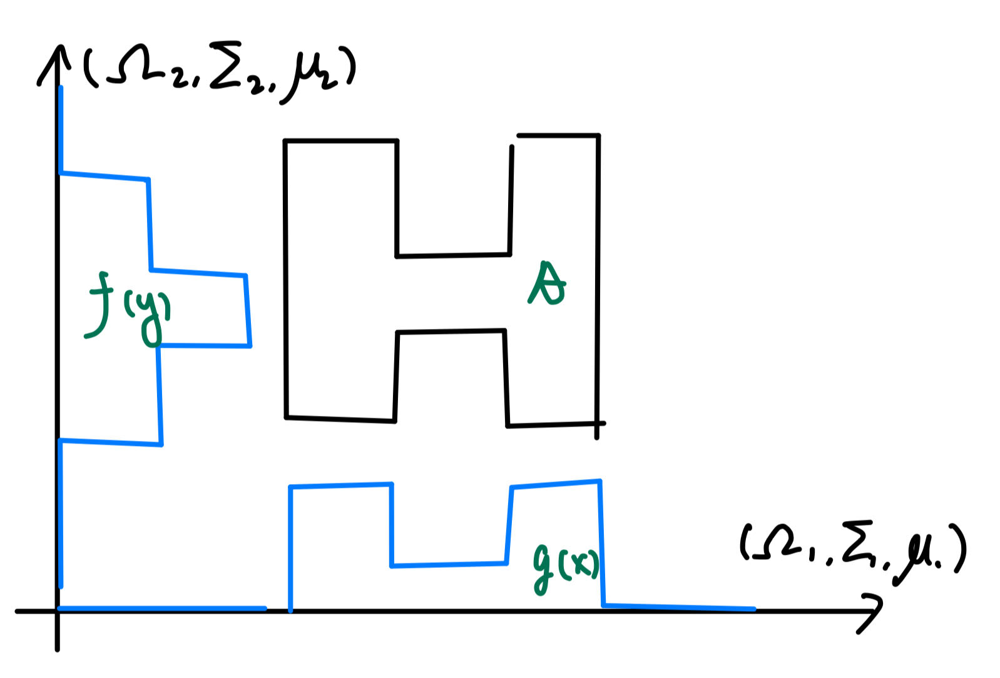

5 Iterated integrals
In this section, we consider
- Two \(\sigma\)-finite measure spaces \((\Omega_1, \Sigma_1, \mu_1)\) and \((\Omega_2, \Sigma_2, \mu_2)\).
- \(\Omega = \Omega_1\times \Omega_2, \Sigma=\Sigma_1\times \Sigma_2\) in the \(\sigma\)-algebra product 2.8.
Key takeaways:
- The product \(\sigma\)-algebra is characterized by the section property (proposition 2.4).
- \(\sigma\)-finiteness is extremely important.
Product measure
Recall that, given \(A\in \Sigma\), we defined the functions \[ A_1(y) = \{x\in \Omega_1: (x, y)\in A\}, \quad A_2(x) = \{y\in \Omega_2: (x, y)\in A\} \]
Theorem 5.1 (characterization of product measure)
Fixing \(A\in \Sigma\), define \(f: \Omega_2\to \mathbb R\) and \(g: \Omega_1\to \mathbb R\) by \(g = \mu_1 \circ A_1, m_2 = \mu_2 \circ A_2\), then \[ (\mu_1\times \mu_2)(A) = \int_{\Omega_2} f(y)\, d\mu_2 = \int_{\Omega_1} g(x)\, d\mu_1 \]

Figure 5.1: demonstration of product measure.
Proof outline:
- \(f, g\) are measurable (by monotone class theorem).
Consider the set \(\mathcal M\subset \Sigma\) of all sets for which \(f, g\) defined as above are measurable.